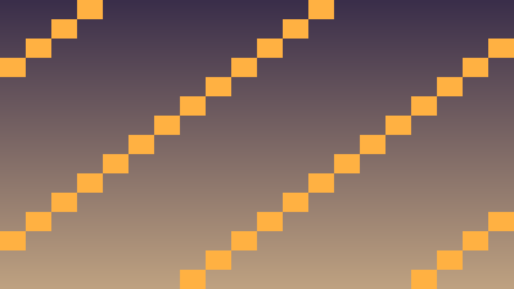

6.3 Audio (skaņa) system (sistēma)
Stundas uzdevums: Pievienot mūziku, sound effect (skaņas efektus) un audio buses (skaņas kopne) spēlei.
80 min plāns: Teorija un paraugs (~10 min) · 1. uzdevums (~20 min) - atskaņo pirmo audio (skaņu) · 2. uzdevums (~25 min) - pievieno background music (fona mūziku) ar pāreju · 3. uzdevums (~20 min) - sakārto skaļumu ar audio bus (skaņas kopne) · Iesniegšana (~5 min).
Pirms sāc: atver savu spēli. Sagatavo divus audio (skaņa) file (failus): vienu īsu efektu un vienu garāku mūziku. Ja tādu nav, lejupielādē bezmaksas audio (skaņas) no freesound.org vai opengameart.org.
Teorija: Godot audio (skaņa)
Godot audio (skaņa) system (sistēma) izmanto AudioStreamPlayer (skaņas atskaņotājs) nodes (mezgli) ar audio bus (skaņas kopne) architecture (arhitektūru).
using Godot;
// Atskaņot SFX
AudioStreamPlayer sfx = GetNode<AudioStreamPlayer>("SFX");
sfx.Stream = ResourceLoader.Load<AudioStream>("res://sounds/jump.ogg");
sfx.Play();
// Mūzika ar fade-in
private void PlayMusicFadeIn(string path)
{
musicPlayer.Stream = ResourceLoader.Load<AudioStream>(path);
musicPlayer.VolumeDb = -30;
musicPlayer.Play();
CreateTween().TweenProperty(musicPlayer, "volume_db", -10.0, 2.0); // fade up
}Audio buses (skaņas kopne): Master (galvenais skaņas kanāls) → Music (mūzika), SFX (skaņas efekts), Voice (balss). Lietotājs var pielāgot katru atsevišķi.
Kā šo izmantot project (projektā)
Atceries: ar redzamu efektu editor (redaktorā) nepietiek. Paskaidro, kura C# class (klase) glabā state (stāvokli), kura method (metode) to maina un kā Godot node (mezgls) structure (struktūra) izmanto šo code (kodu).
Pārbaudi: UI (lietotāja saskarne) signal (signāli), audio (skaņa) darbības, debug (atkļūdošana) output (izvade) un publishing (publicēšanas) template (sagatave) ir sasaistīta ar C# game state (spēles stāvokli).
public class PolishCheckpoint
{
public string Lesson = "6.3 Audio sistēma";
public bool UsesCSharp = true;
public bool ConnectsUiSignals = true;
public bool RoutesAudioEvents = true;
public bool VerifiesExportBuild = true;
}Praktiskie uzdevumi
1. uzdevums -
Atskaņo pirmo audio (skaņu)
Beigās spēle noskanēs, kad kaut kas notiek.
- Ievelc audio (skaņa) file (failu) project (projekta) folder (mapē), piemēram
res://sounds/jump.ogg. - Pievieno scene (scēnai)
AudioStreamPlayer(skaņas atskaņotājs) node (mezglu) ar nosaukumuSFX(skaņas efekti). - Pārliecinies, ka file (faila) sākumā ir
using Godot;. - Paņem node (mezglu) ar
AudioStreamPlayer sfx = GetNode<AudioStreamPlayer>("SFX");. - Izsauc
sfx.Play();lēciena vai savākšanas brīdī. - Būvē un pārbaudi audio (skaņu).
- Izsauc event (notikumu) ļoti ātri vairākas reizes un pieraksti, kas notiek ar audio (skaņu).
Gatavs, kad: event (notikuma) brīdī atskan audio (skaņa), un tu esi pierakstījis, kas notiek, atkārtojot to ļoti ātri.
2. uzdevums -
Pievieno background music (fona mūziku) ar pāreju
Beigās mūzika sāksies mīksti, nevis uzreiz pilnā skaļumā.
- Pievieno otru
AudioStreamPlayer(skaņas atskaņotājs) ar nosaukumuMusic(mūzika). - Iestati tā audio (skaņa) file (failu) un ieslēdz atkārtošanos import (importa) settings (iestatījumos).
- Iestati sākumā skaļumu uz
music.VolumeDb = -40;. - Izveido Tween (pakāpeniska vērtību maiņa), kas vienā sekundē paceļ skaļumu līdz 0 dB.
- Palaid un ieklausies, vai mūzika ienāk pakāpeniski.
- Pievieno arī izejošu pāreju, kad spēle beidzas.
- Pieraksti, kāpēc skaļumu mēra decibelos, nevis procentos.
Gatavs, kad: mūzika ienāk pakāpeniski, atkārtojas bez pauzes un beigās izgaist.
3. uzdevums -
Sakārto skaļumu ar audio bus (skaņas kopne)
Beigās spēlētājs varēs atsevišķi regulēt mūziku un efektus.
- Atver apakšā tab (cilni) Audio (skaņa).
- Izveido divus jaunus bus (skaņas kopne):
Music(mūzika) unSFX(skaņas efekti). - Piesaisti katru atskaņotāju savam bus (skaņas kopne) Inspector (īpašību panelis) panel (panelī).
- Pievieno settings (iestatījumu) logam divus
HSlider(horizontāls slīdnis) mezglus. - Savieno tos ar
AudioServer.SetBusVolumeDb(AudioServer.GetBusIndex("Music"), valueDb);. - Pārbaudi, ka mūzikas slider (slīdnis) nemaina efektu skaļumu.
- Iestati mūziku uz nulli un pārbaudi, ka efekti joprojām skan.
Gatavs, kad: abi slider (slīdņi) darbojas neatkarīgi: izslēdzot mūziku, sound effect (skaņas efekti) joprojām atskan.
Papildu uzdevums - Saglabā skaļuma settings (iestatījumus)
Ja pamatdarbs ir gatavs, atceries spēlētāja izvēli.
- Saglabā abu bus (skaņas kopne) skaļumu JSON (JavaScript objektu pieraksts) file (failā) ar 5.3 stundas
SaveManager. - Ielādē tos spēles startā.
- Iestati slīdņu position (pozīcijas) pēc ielādētajām value (vērtībām).
- Aizver spēli un palaid no jauna.
- Pārbaudi, ka skaļums palicis tāds, kādu to atstāji.
Gatavs, kad: pēc spēles restart (restarta) skaļuma slider (slīdņi) ir tajā pašā vietā, kur tu tos atstāji.
Ko sagatavo
Stundas mērķis: Tavā spēlē skan sound effect (skaņas efekti) un background music (fona mūzika) ar mīkstām pārejām, un mūziku ar efektiem var regulēt atsevišķi caur diviem audio bus (skaņas kopne).
GitHub repository (krātuvē) jābūt:
- README.md ievietota video link (saite) ar audio (skaņu), kurā dzirdama mūzikas ienākšana un vismaz viens sound effect (skaņas efekts).
- Screenshot (ekrānuzņēmums) ar Audio (skaņa) tab (cilni), kurā redzami tavi divi bus (skaņas kopne).
- C# file (fails) ar audio (skaņa) code (kodu).
- README.md: kāpēc skaļumu mēra decibelos un kāpēc mūziku un efektus tur atsevišķos bus (skaņas kopne).
Kā iesniedz: Veic commit (izmaiņu fiksējums) un push (nosūtīšana uz attālo krātuvi). Skolotāja norādītajā vietā ievieto tikai GitHub repository (krātuves) link (saiti); visiem prasītajiem file (failiem), README.md pierakstiem un pierādījumiem jābūt pašā repository (krātuvē).
Biežākās kļūdas
- Audio (skaņa) nestrādā: stream (skaņas plūsma) nav ielādēts vai bus (skaņas kopne) mute.
- Lag (aizture) music (mūzika) start: OGG (skaņas failu formāts) file (fails) liels - ielādē to ar
ResourceLoader.Loadjau līmeņa sākumā. - SFX (skaņas efekts) cuts off: Lieto pool (objektu krātuve), lai daudzi vienlaikus.
Godot screenshot (ekrānuzņēmumi)

Code sample (koda piemērs) (paplašināts)
using Godot;
using System.Collections.Generic;
public partial class AudioManager : Node
{
private readonly List<AudioStreamPlayer> sfxPool = new();
private AudioStreamPlayer musicPlayer;
private const int PoolSize = 8;
public override void _Ready()
{
for (int i = 0; i < PoolSize; i++)
{
AudioStreamPlayer player = new AudioStreamPlayer();
player.Bus = "SFX";
AddChild(player);
sfxPool.Add(player);
}
musicPlayer = new AudioStreamPlayer();
musicPlayer.Bus = "Music";
AddChild(musicPlayer);
}
public void PlaySfx(string path)
{
foreach (AudioStreamPlayer player in sfxPool)
{
if (!player.Playing)
{
player.Stream = ResourceLoader.Load<AudioStream>(path);
player.Play();
return;
}
}
}
public void PlayMusic(string path)
{
musicPlayer.Stream = ResourceLoader.Load<AudioStream>(path);
musicPlayer.Play();
}
}